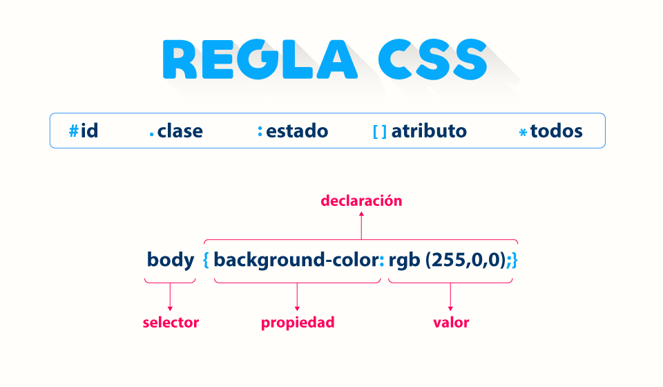

🌻Trabajo Practico 03🌻
🌻Dulce Ana Vigna Coronel🌻
🌷¿Qué significa CSS?
Las Hojas de estilo en cascada (del ingles Cascading Stylesheets CSS). Es un lenguaje que sirve para describir la
presentacion, el "estilo" de los documentos.
🌺¿Para qué sirve el CSS?¿Qué programa se utiliza para interpretar el CSS?
Se utiliza CSS para el diseño grafico, para definir y crear la presentacion de la pagina web. Osea hace que se
vea mas atractivo visualmente
El programa que se utiliza para intepretar CSS es el navegador
🏵️¿A qué se llama regla de CSS?
Los CSS estarán ordenados por reglas. Las reglas son un conjunto de propiedades y valores que se aplicarán a una
o varias etiquetas según se necesite. Se le llama regla al conjunto de llaves,selectores, propiedades y sus
respectivos valores
🪷¿Cuál es la anatomía de la regla de CSS? Agregar imagen explicativa y utilizando una lista descriptiva
explicar
sus elementos.

- La regla está compuesta por los siguiente elementos:
- Selector:
- Se selecciona al elemento o los elementos que se le quiere dar estilo.
- Declaración:
- Al o los elementos que se selecciono se le aplica las propiedades que se desee. Puede haber mas de
uno.
- Propiedades:
- Es lo que permite dar un estilo a un elemento HTML.Siempre las propiedades se ubicarán a la
izquierda.
- Valor de la propiedad:
- Las propiedades deben tener un valor. Cada propiedad tiene valores definidos. Cada valor se ubicará
a la
derecha.
🌼¿Qué es un selector en CSS?
🍀Identificar y definir los selectores: de ID, de clases, universal, de etiquetas, descendente.
🍁Explicar brevemente utilizando una lista ordenada: ¿Cómo funciona el CSS?
🌹¿Cuáles son las tres formas para vincular CSS con HTML?
💐Ingrese al sitio CSS Zen Garden http://www.csszengarden.com y analicemos el código HTML siguiendo los
siguientes
pasos:
El primer diseño que elegi es:
Visualizar diseño
El segundo diseño que elegi es:
Visualizar diseño